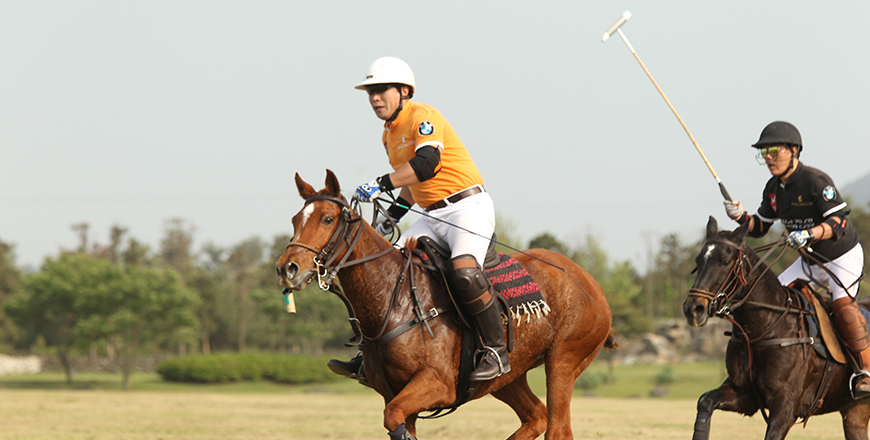
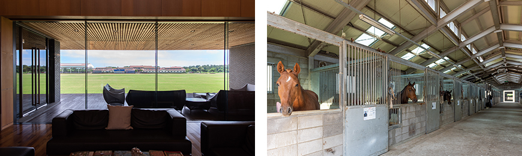

기획취재콘텐츠
- Home
- 제주라이프
- 기획취재콘텐츠
吸引国内外游客的济州岛休闲产业. 第四篇새로운 글


扩大马球文化基层的中心——韩国马球乡村俱乐部

- 马球竞技现场 ⓒ韩国马球乡村俱乐部 -
马球起源于使用马匹作为运输手段的古代，被现代奥运会列为了正式项目，具有悠久的历史。需要骑着马在广阔的竞技场中穿梭，挥动球棍击球，可以培养出惊人的集中力和强韧的体魄，由于具有绅士风度的比赛文化，在社交场所也发挥着极大的作用。作为国外皇族和富豪们喜爱的体育项目而广为人知，虽然普及速度缓慢，但在全世界范围内正呈现出逐渐增加的趋势。
- 规模庞大的韩国马球乡村俱乐部的会馆和马球草坪竞技场 ⓒ尹素真（音） -
韩国马球乡村俱乐部位于济州岛济州市旧左邑杏源里一带，占地21.3277万平方米（约6.45万坪），是韩国最早、也是唯一一家马球俱乐部。成立于2005年的韩国马球乡村俱乐部也是济州岛观光事业中由外商投资的第一号企业。2008年动工兴建的马球竞技场和俱乐部会馆在约1年半后的2010年6月竣工，同年8月正式开放，至今已迎来第11年。包括8个足球场大小的马球草坪竞技场、超越国际标准的室内马球竞技场、配备的专业人力、可同时管理60多匹马的两栋马房等，具备着在全世界任何地方都毫不逊色的顶尖设施。

- (左)可以一眼看到草坪球场的俱乐部内部 ⓒ尹素真（音）
(右)由专业人员管理的宽敞、舒适的马房 ⓒ尹素真（音） -
(右)由专业人员管理的宽敞、舒适的马房 ⓒ尹素真（音） -
会员们可以长期停留并享受马球的俱乐部会馆和公寓式酒店是世界著名旅日韩裔建筑师伊丹润的作品。将济州岛的石头、树木与金属等现代建筑材料巧妙地组合在了一起，充分体现了济州岛的自然美与舒适感。在竞技场可以越过俱乐部的屋顶一眼望到巍然耸立的汉拿山，是在韩国马球乡村俱乐部的众多美景中最特别、最美丽的景象。
韩国马球乡村俱乐部成立当时，在韩国还没有人涉足马球的情况下，推进马球竞技场事业是具有很大风险的旅游领域风险投资项目。但是，为了顺应社会、文化、经济不断向国际化发展，全球网络成为必备要素的时代要求，带着韩国也需要引进马球的看法，以长远的目光推进了事业。而且马球可以促进竞技会员之间的亲密关系，而喜爱马球的人大部分在各国经济、政治上都具有很大的影响力，因此可以成为宣传韩国，吸引产业投资的重要因素。
济州岛的地理优势使马球的成长与魅力最大化
- ⓒ韩国马球乡村俱乐部 -
韩国马球乡村俱乐部的专务金贤弼（音）表示，“之所以选择济州岛作为俱乐部用地，是因为济州岛的冬天比内陆短，适合管理场地并用作马球竞技场。且济州岛拥有的自然魅力对于面向全世界促进市场营销和交流的马球俱乐部而言具有很大的吸引力。尤其是，推进成立俱乐部的21世纪初期，在东北亚地区，即韩国、日本、中国是没有一家马球俱乐部的情况，因此具备了适合容纳中国和日本等潜在马球客户的地理优势。”
再加上济州岛标榜着国际自由城市，相应地也扩宽了外国人访问的制度，这也成为了其最大的优点。今后，随着第二国际机场的开通，可以更加方便地吸引外国客户，届时，预计可以展开比现在更活跃的宣传活动。
- 韩国马球乡村俱乐部正通过不断举办国际赛，向世界展示济州岛的魅力,
并通过参加国外俱乐部举办的国际赛，拓宽交流的渠道。 ⓒ韩国马球乡村俱乐部 -
并通过参加国外俱乐部举办的国际赛，拓宽交流的渠道。 ⓒ韩国马球乡村俱乐部 -
韩国马球乡村俱乐部至今共举办了7场马球国际赛，并与中国、东南亚的马球俱乐部持续举办了数十场交流赛。俱乐部的会员们也会定期参加在东南亚举办的国际赛。原本今年下半年正准备举行由3~4个国家的马球选手和俱乐部共同参加的第8届国际马球赛，但由于新冠肺炎疫情引起的世界性全球大流行，所以能否举行还是个未知数。
期间，参加比赛的外国马球选手及相关人士高度评价了济州岛的美丽与韩国马球乡村俱乐部的设施水平。有许多人对济州岛的旅游资源表示出满意，以及想要具体投资等的意愿。比赛不仅会向国外，也会免费向普通人开放，只要观看过一次马球比赛，就没有人能不折服于位于大自然间的马球赛场，被马球比赛本身具有的紧张、刺激与活力深深吸引。如果觉得游览济州岛的著名景点很无趣，不如就观看充满特色的马球比赛，相信这会是一个非常特别的选择。
通过积极宣传、扩大体验机会等致力于发展马球文化
由于是在韩国首次涉猎马球文化，因此韩国马球乡村俱乐部在成立初期，就制定了将成立到开设俱乐部的时间视为准备过程，将之后的10年，即到目前为止的时间视为引进过程的计划。俱乐部之所以能够运营至今，得益于从创立初期就一直给予陪伴的会员们对马球的喜爱与支持。预计，今后会增加来自东南亚国家及中国、日本等国家的会员。
此外，济州岛也带着积极培养骑马等与马产业相关的目标，因此，如果开拓并实施有益的政策，相信会扩大马球的发展可能性。虽然目前对马球缺乏普遍的认识和宣传，但韩国马球乡村俱乐部计划通过多种方式来不断扩大宣传。具体方向是通过体验来推广马球比赛，同时通过国内外宣传努力扩宽会员。
- 从左到右，依次为朴勇柱（音）选手、韩国马球乡村俱乐部庾橘（音）科长、朴根成（音）总经理 ⓒ韩国马球乡村俱乐部 -
首先，为了推广马球文化，正在构想以各大学的骑马社等为中心，扩大体验和学习马球的机会，并在大学之间创建骑马联赛。计划以济州岛内的青少年为中心扩大马球体验机会，积极为希望访问马球俱乐部的学校或团体提供现场体验的机会。不仅在韩国国内，还打算以将马球作为主要竞技的东南亚国家（泰国、文莱、菲律宾、新加坡等）及中国市场为中心加强国外宣传。
韩国马球乡村俱乐部的老会员朴勇柱选手表示，“大家普遍认为马球是专属于富豪的运动，但了解后就会发现，即使没有自己的马匹也能去享受。可以选择自己的巡数 ，是一项有许多选择余地的体育项目。”接着他还表示，“如果身高超过普通水平，即使年纪小，也可以体验，而且可以坚持到老年。男女老少皆宜，非常适合作为全家一起参与的体育运动。希望能摒弃普通人很难接触马球的这一偏见，能有更多的人去感受马球的魅力。”
※ 4) 巡数（chucker）: 指构成马球比赛的各回合的用语，类似篮球比赛的节数（quarter）。一场通常由6巡组成，每巡中间休息3分钟，中场休息5分钟。重要的比赛由8巡组成。
이전글
다음글